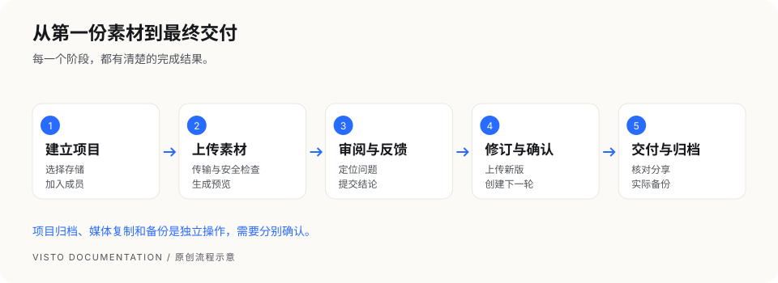

文档首页/开始使用
做完你的第一个项目
本章面向已经能打开 Visto 的 Owner 或项目主管。建议先用一张不含敏感内容的图片完成练习，再接入真实项目。


第一步：确认保存位置
Owner 进入 Owner 设置 → 存储与上传安全，至少创建一个可供项目上传使用的存储位置，并开放给需要的项目。项目主管看不到存储或没有创建权限时，请联系 Owner。
第二步：创建项目
在项目列表点“新建项目”，填写名称、项目说明，并选择项目存储位置。建议名称包含作品与交付批次，如“品牌短片 · 10 月交付”；说明写清目标、负责人和交付日期。
第三步：上传一份媒体
进入新项目的“媒体”，选择“上传本地文件”。等上传完成，再等媒体状态变成可预览。上传完成只说明传输结束，后台预览处理可能还在继续。
第四步：创建第一轮审阅
打开素材详情，确认是 V1，点“创建审阅”。填写审阅名称，选择参与成员、通过条件和截止时间；需要外部反馈时，设置访问密码、评论和下载权限，再创建审阅分享。
第五步：收集并处理反馈
用分享入口查看图片或播放视频。提交一条能定位到画面或时间的反馈，项目内核对评论，再回复处理结果。需要正式结论时由具备权限的审阅者提交“通过”“需修改”或“拒绝”。
第六步：提交新版
回到原资产的详情，选择“上传新版本”，上传修订文件。确认 V2 出现在版本历史里，以 V2 创建下一轮审阅。不要为了升级版本而把同一作品反复作为独立资产上传。
第七步：交付与归档
确认最新版本通过、交付链接权限正确、接收者能访问后，再归档项目。归档保留项目记录并暂停项目内写入；备份还需要由部署维护者单独执行。
完成检查
- 项目名称、保存位置和参与成员正确。
- 图片或视频能正常预览；没有未处理的隔离或失败提示。
- 反馈能回到原版本和具体位置。
- V1、V2 的历史都保留，当前版本明确。
- 分享在接收者设备上能打开；下载权限符合交付要求。
- 重要数据已有实际备份，项目归档不能替代备份。